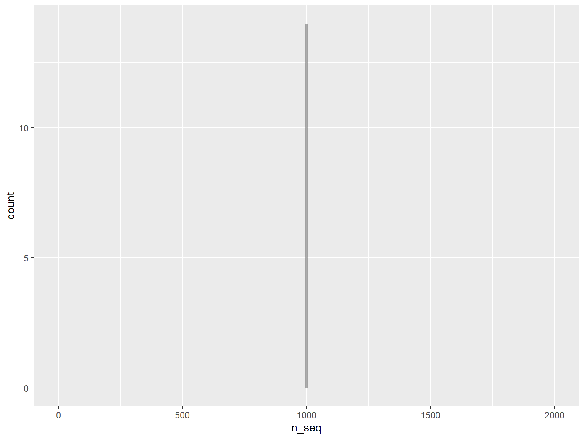
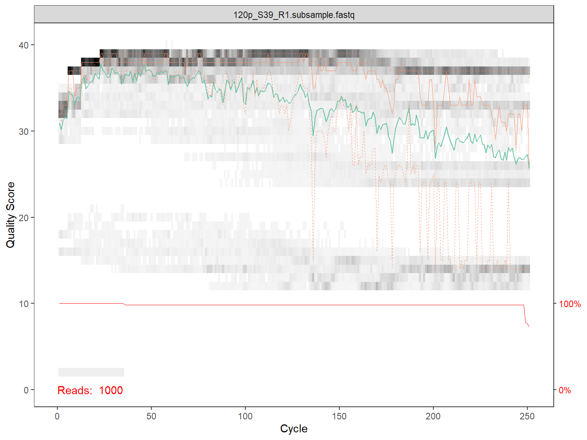
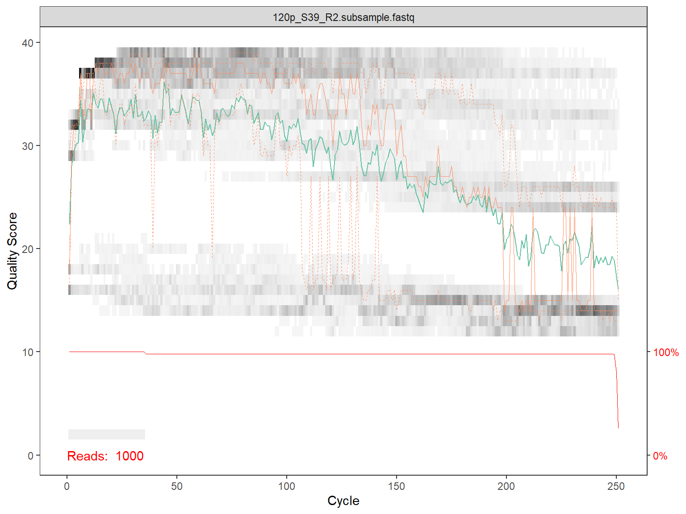
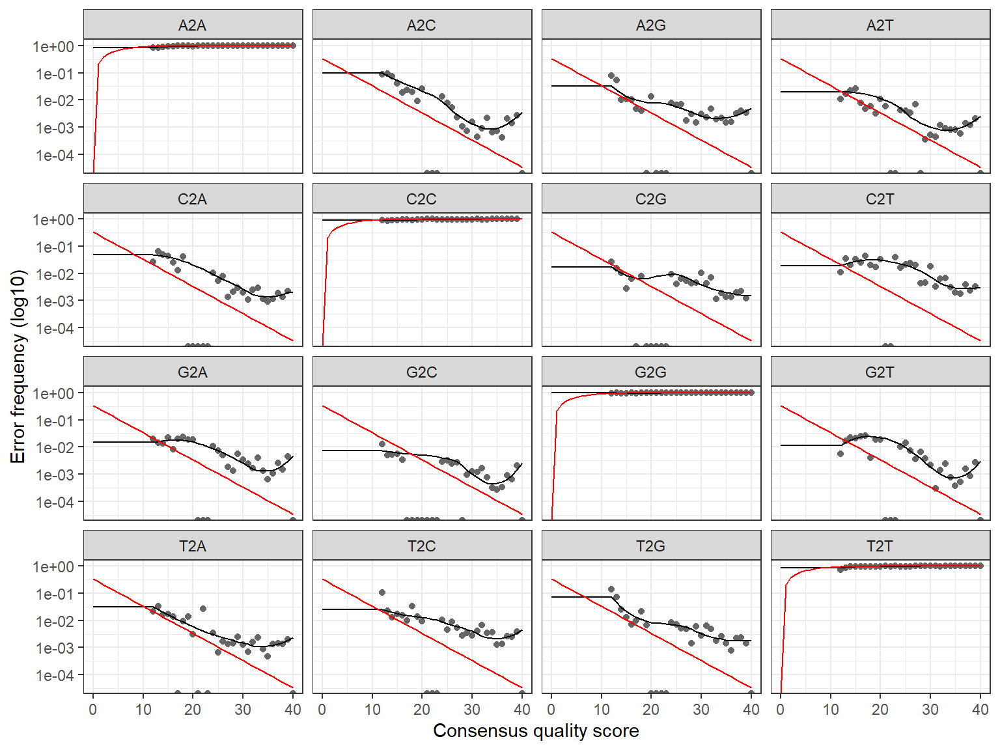

R course
Daniel Vaulot
2023-01-18

05 - Metabarcode processing with dada2
Introduction
This tutorial explain how to process Illumina data with the Dada2 suite as implemented in R (dada2 is also implemented in Qiime).
It is adapted from the Dada2 tutorial
Directory structure
Relative to the main directory from GitHub
- ../fastq : fastq files
- ../fastq_filtered : fastq files after filtration
- ../qual_pdf : qual pdf files
- ../dada2 : dada2 processed files
- ../databases : PR2 database file
- ../blast : BLAST files output
- ../R : This tutorial for Illumina files
Downloads
Install the following software :
Download and install the following libraries by running under R studio the following lines
install.packages("readr") # To read and write files
install.packages("readxl") # To read excel files
install.packages("dplyr") # To manipulate dataframes
install.packages("tibble") # To work with data frames
install.packages("tidyr") # To work with data frames
install.packages("stringr") # To manipulate strings
install.packages("ggplot2") # To do plots
if (!requireNamespace("BiocManager", quietly = TRUE))
install.packages("BiocManager")
BiocManager::install("Biobase")
BiocManager::install("Biostrings")
BiocManager::install("dada2")
BiocManager::install("phyloseq")Data used

The samples originate from the CARBOM cruise (2013) off Brazil.
Samples have been sorted by flow cytometry and 3 genes have been PCR amplified :
- 18S rRNA - V4 region
- 16S rNA with plastid
- nifH
The PCR products have been sequenced by 1 run of Illumina 2*250 bp. The data consist of the picoplankton samples from one transect and fastq files have been subsampled with 1000 sequences per sample.
References
- Gerikas Ribeiro C, Marie D, Lopes dos Santos A, Pereira Brandini F, Vaulot D. (2016). Estimating microbial populations by flow cytometry: Comparison between instruments. Limnol Oceanogr Methods 14:750–758.
- Gerikas Ribeiro C, Lopes dos Santos A, Marie D, Brandini P, Vaulot D. (2018). Relationships between photosynthetic eukaryotes and nitrogen-fixing cyanobacteria off Brazil. ISME J in press.
- Gerikas Ribeiro C, Lopes dos Santos A, Marie D, Helena Pellizari V, Pereira Brandini F, Vaulot D. (2016). Pico and nanoplankton abundance and carbon stocks along the Brazilian Bight. PeerJ 4:e2587.
Set-up
Load the necessary libraries
Set up directories
Create directories that will be used to stored the files at the different stage of the processing
# change the following line to the path where you unzipped the tutorials
fastq_dir <- "../fastq/" # fastq directory
filtered_dir <- "../fastq_filtered/" # fastq filtered
qual_dir <- "../qual_pdf/" # qual pdf
dada2_dir <- "../dada2/" # dada2 results
blast_dir <- "../blast/" # blast2 results
database_dir <- "../databases/" # databases
dir.create(filtered_dir)
dir.create(qual_dir)
dir.create(dada2_dir)
dir.create(blast_dir)Setup variables
Primers
Note that the primers are degenerated.
Dada2 has an option to remove primers (FilterandTrim) but this function will not accept degeneracy.
PR2 tax levels
Examine the fastQ files
Construct a list of the fastq files
It is assumed that the sample names are at the start of file name and separated by _.
# get a list of all fastq files in the ngs directory and separate R1 and R2
fns <- sort(list.files(fastq_dir, full.names = TRUE))
fns <- fns[str_detect( basename(fns),".fastq")]
fns_R1 <- fns[str_detect( basename(fns),"R1")]
fns_R2 <- fns[str_detect( basename(fns),"R2")]
# Extract sample names, assuming filenames have format: SAMPLENAME_XXX.fastq
sample.names <- str_split(basename(fns_R1), pattern = "_", simplify = TRUE)
sample.names <- sample.names[,1]
sample.names [1] "120p" "121p" "122p" "125p" "126p" "140p" "141p" "142p" "155p" "156p"
[11] "157p" "165p" "166p" "167p"Compute number of paired reads
# create an empty data frame
df <- data.frame()
# loop through all the R1 files (no need to go through R2 which should be the same)
for(i in 1:length(fns_R1)) {
# use the dada2 function fastq.geometry
geom <- fastq.geometry(fns_R1[i])
# extract the information on number of sequences and file name
df_one_row <- data.frame (n_seq=geom[1], file_name=basename(fns_R1[i]) )
# add one line to data frame
df <- bind_rows(df, df_one_row)
} Display results
Plot quality for reads
for(i in 1:length(fns)) {
# Use dada2 function to plot quality
p1 <- plotQualityProfile(fns[i])
# Only plot on screen for first 2 files
if (i <= 2) {print(p1)}
# save the file as a pdf file (uncomment to execute)
p1_file <- paste0(qual_dir, basename(fns[i]),".qual.pdf")
ggsave( plot=p1, filename= p1_file,
device = "pdf", width = 15, height = 15, scale=1, units="cm")
} 

Filter and Trim the reads
Two approaches
The dada2 algorithm requires primers to be removed prior to processing.
- Using dada2 there are 2 possibilities
- Remove by sequence, but dada2 does not allow for ambiguities
- Remove by position, which is not a problem for Illumina sequences but is a problem for 454
- For complex situation we recommend to use cutadapt to remove the primers.
Create names for the filtered files
We create the name of the files that will be generated by the filterAndTrim function in the step below.
These names are composed by the path name (“../fastq_filtered/”), the sample names, the read number (R1 or R2) and a “_filt” suffix.
Method 1 - Removing the primers by sequence
(DO NOT EXECUTE THIS STEP)
The next piece of code could be used to remove the primers by sequence.
The dada2 package does not allow for primer degeneracy. Since our forward primer is degenerated at two positions, all four combinations need to be tested.
However it will be necessary to re-assemble after that the 4 fastQ files created (which has not to done).
So the better strategy is to remove primer by truncation (see next step).
# On Windows set multithread=FALSE
out_all <-data.frame(id=length(fns_R1))
for (i in 1:4) {
out <- filterAndTrim(fns_R1, filt_R1, fns_R2, filt_R2, truncLen=c(250,240), trimLeft = c(0,0),
maxN=0, maxEE=c(Inf, Inf), truncQ=10, rm.phix=TRUE, primer.fwd = primer_set_fwd[i],
compress=FALSE, multithread=FALSE)
out_all <- cbind(out_all, out)
}
knitr::kable(out_all)Method 2 - Remove primers by truncation and filter
Filter all sequences with N, truncate R2 to 240 bp
out <- filterAndTrim(fns_R1, filt_R1, fns_R2, filt_R2,
truncLen=c(250,240), trimLeft = c(primer_length_fwd,primer_length_rev),
maxN=0, maxEE=c(2, 2), truncQ=10, rm.phix=TRUE,
compress=FALSE, multithread=FALSE)
knitr::kable(out)| reads.in | reads.out | |
|---|---|---|
| 120p_S39_R1.subsample.fastq | 1000 | 256 |
| 121p_S57_R1.subsample.fastq | 1000 | 457 |
| 122p_S4_R1.subsample.fastq | 1000 | 407 |
| 125p_S22_R1.subsample.fastq | 1000 | 553 |
| 126p_S40_R1.subsample.fastq | 1000 | 508 |
| 140p_S5_R1.subsample.fastq | 1000 | 456 |
| 141p_S23_R1.subsample.fastq | 1000 | 473 |
| 142p_S41_R1.subsample.fastq | 1000 | 583 |
| 155p_S59_R1.subsample.fastq | 1000 | 528 |
| 156p_S6_R1.subsample.fastq | 1000 | 530 |
| 157p_S24_R1.subsample.fastq | 1000 | 513 |
| 165p_S42_R1.subsample.fastq | 1000 | 521 |
| 166p_S60_R1.subsample.fastq | 1000 | 519 |
| 167p_S7_R1.subsample.fastq | 1000 | 572 |
Dada2 processing
Learn error rates
The error rates are plotted.
R1

1581480 total bases in 6876 reads from 14 samples will be used for learning the error rates.R2
Dereplicate the reads
R1
R2
Sequence-variant inference algorithm to the dereplicated data
R1
Sample 1 - 256 reads in 93 unique sequences.
Sample 2 - 457 reads in 166 unique sequences.
Sample 3 - 407 reads in 128 unique sequences.
Sample 4 - 553 reads in 220 unique sequences.
Sample 5 - 508 reads in 219 unique sequences.
Sample 6 - 456 reads in 147 unique sequences.
Sample 7 - 473 reads in 180 unique sequences.
Sample 8 - 583 reads in 211 unique sequences.
Sample 9 - 528 reads in 172 unique sequences.
Sample 10 - 530 reads in 211 unique sequences.
Sample 11 - 513 reads in 177 unique sequences.
Sample 12 - 521 reads in 199 unique sequences.
Sample 13 - 519 reads in 172 unique sequences.
Sample 14 - 572 reads in 170 unique sequences.
dada-class: object describing DADA2 denoising results
5 sequence variants were inferred from 93 input unique sequences.
Key parameters: OMEGA_A = 1e-40, OMEGA_C = 1e-40, BAND_SIZE = 16R2
Sample 1 - 256 reads in 236 unique sequences.
Sample 2 - 457 reads in 391 unique sequences.
Sample 3 - 407 reads in 299 unique sequences.
Sample 4 - 553 reads in 409 unique sequences.
Sample 5 - 508 reads in 451 unique sequences.
Sample 6 - 456 reads in 335 unique sequences.
Sample 7 - 473 reads in 347 unique sequences.
Sample 8 - 583 reads in 458 unique sequences.
Sample 9 - 528 reads in 418 unique sequences.
Sample 10 - 530 reads in 404 unique sequences.
Sample 11 - 513 reads in 384 unique sequences.
Sample 12 - 521 reads in 395 unique sequences.
Sample 13 - 519 reads in 396 unique sequences.
Sample 14 - 572 reads in 400 unique sequences.
dada-class: object describing DADA2 denoising results
3 sequence variants were inferred from 236 input unique sequences.
Key parameters: OMEGA_A = 1e-40, OMEGA_C = 1e-40, BAND_SIZE = 16Merge sequences
mergers <- mergePairs(dada_R1, derep_R1, dada_R2, derep_R2, verbose=TRUE)
# Inspect the merger data.frame from the first sample
df_table <- mergers[[1]] %>%
mutate(sequence = str_c(str_sub(sequence, 1, 20), "..."))
kable(df_table, "html")| sequence | abundance | forward | reverse | nmatch | nmismatch | nindel | prefer | accept |
|---|---|---|---|---|---|---|---|---|
| AGCTCCAATAGCGTATATTA... | 146 | 1 | 1 | 71 | 0 | 0 | 1 | TRUE |
| CACACGTCTAATGTTGCATT... | 64 | 2 | 2 | 131 | 0 | 0 | 1 | TRUE |
| AGCTCCAATAGCGTATACTA... | 13 | 3 | 3 | 72 | 0 | 0 | 1 | TRUE |
Make sequence table
seqtab <- makeSequenceTable(mergers)
dim(seqtab)
# Make a transposed of the seqtab to make it be similar to mothur database
t_seqtab <- t(seqtab)
# Inspect distribution of sequence lengths
table(nchar(getSequences(seqtab))) [1] 14 58
318 351 360 363 367 369 371 372 373 375 376 377 378 379 380 382 383 384 387 388
3 1 1 3 1 1 2 1 2 1 3 6 12 4 4 2 5 2 1 3 Remove chimeras
Note that remove chimeras will produce spurious results if primers have not be removed. The parameter methods can be pooled or consensus
seqtab.nochim <- removeBimeraDenovo(seqtab, method="consensus", multithread=FALSE, verbose=TRUE)
# Compute % of non chimeras
paste0("% of non chimeras : ",sum(seqtab.nochim)/sum(seqtab)*100)
paste0("total number of sequences : ",sum(seqtab.nochim))[1] "% of non chimeras : 100"
[1] "total number of sequences : 5868"In our case there were no chimeras found. It is noteworthy that the total number of sequences is almost twice that what is recovered with mothur which is 2573
Track number of reads at each step
# define a function
getN <- function(x) sum(getUniques(x))
track <- cbind(out, sapply(dada_R1, getN), sapply(mergers, getN),
rowSums(seqtab), rowSums(seqtab.nochim))
colnames(track) <- c("input", "filtered", "denoised", "merged", "tabled", "nonchim")
rownames(track) <- sample.names
knitr::kable(track)
write_tsv(data.frame(track), str_c(dada2_dir,"read_numbers_dada2.tsv"))| input | filtered | denoised | merged | tabled | nonchim | |
|---|---|---|---|---|---|---|
| 120p | 1000 | 256 | 241 | 223 | 223 | 223 |
| 121p | 1000 | 457 | 446 | 397 | 397 | 397 |
| 122p | 1000 | 407 | 396 | 357 | 357 | 357 |
| 125p | 1000 | 553 | 551 | 464 | 464 | 464 |
| 126p | 1000 | 508 | 493 | 340 | 340 | 340 |
| 140p | 1000 | 456 | 441 | 427 | 427 | 427 |
| 141p | 1000 | 473 | 460 | 381 | 381 | 381 |
| 142p | 1000 | 583 | 567 | 495 | 495 | 495 |
| 155p | 1000 | 528 | 524 | 445 | 445 | 445 |
| 156p | 1000 | 530 | 525 | 425 | 425 | 425 |
| 157p | 1000 | 513 | 507 | 438 | 438 | 438 |
| 165p | 1000 | 521 | 509 | 442 | 442 | 442 |
| 166p | 1000 | 519 | 510 | 478 | 478 | 478 |
| 167p | 1000 | 572 | 563 | 556 | 556 | 556 |
Transforming and saving the ASVs sequences
In the output of dada2, otu names are the sequences.
We change to give a Otuxxx name and the sequences are stored in the taxonomy table.
seqtab.nochim_trans <- as.data.frame(t(seqtab.nochim)) %>%
rownames_to_column(var = "sequence") %>%
rowid_to_column(var = "OTUNumber") %>%
tibble::remove_rownames() %>%
mutate(OTUNumber = sprintf("otu%04d", OTUNumber)) %>%
mutate(sequence = str_replace_all(sequence, "(-|\\.)",""))
df <- seqtab.nochim_trans
seq_out <- Biostrings::DNAStringSet(df$sequence)
names(seq_out) <- df$OTUNumber
Biostrings::writeXStringSet(seq_out, str_c(dada2_dir, "CARBOM_ASV_no_taxo.fasta"),
compress=FALSE, width = 20000)Assigning taxonomy
This step is quite long… If you want to skip please go to next step.
Export data
Export
We need to reformat the data produced by dada2 if we want to use for further analysis, for example with Phyloseq or BLAST.
Export data as produced by Dada2
Appending taxonomy and boot to the sequence table
Filter for 18S
Remember that we sequenced 3 genes (18S, 16S plastid and nifH).
We remove the sequences that are not 18S by selecting only bootstrap values for Supergroup in excess of 80.
bootstrap_min <- 80
# Filter based on the bootstrap
seqtab.nochim_18S <- seqtab.nochim_trans %>%
dplyr::filter(Supergroup_boot >= bootstrap_min)
# Create a database like file for dada2
write_tsv(seqtab.nochim_18S, str_c(dada2_dir, "CARBOM_dada2.database.tsv"))
cat("Before filtration - # of sequences: ", nrow(seqtab.nochim_trans), "\n")
cat("After filtration - # of sequences: ", nrow(seqtab.nochim_18S), "\n")Before filtration - # of sequences: 58
After filtration - # of sequences: 53 Write FASTA file for BLAST analysis with taxonomy
Use the Biostrings library
df <- seqtab.nochim_18S
seq_out <- Biostrings::DNAStringSet(df$sequence)
names(seq_out) <- str_c(df$OTUNumber,
df$Supergroup,
df$Division,
df$Class,
df$Order,
df$Family,
df$Genus,
df$Species,
sep="|")
Biostrings::writeXStringSet(seq_out, str_c(blast_dir, "CARBOM_ASV.fasta"),
compress=FALSE, width = 20000)Write FASTA file for BLAST analysis with taxonomy
This file can be sent to a server and a BLAST analysis can be done using the following bash file
#!/bin/bash
# Replace the next line by the location of the directory where you have your data
DIR_PROJECT="/projet/sbr/ccebarcodep1408/workshop_nz_2018/blast/"
cd $DIR_PROJECT
FILE="CARBOM_ASV"
FASTA=$DIR_PROJECT$FILE".fasta"
BLAST_TSV=$DIR_PROJECT$FILE".blast.tsv"
OUT_FMT="6 qseqid sseqid sacc stitle sscinames staxids sskingdoms sblastnames pident slen length mismatch gapopen qstart qend sstart send evalue bitscore"
blastn -max_target_seqs 100 -evalue 1.00e-10 -query $FASTA -out $BLAST_TSV -db /db/blast/all/nt -outfmt "$OUT_FMT"Phyloseq
Create and save a phyloseq object from dada2 results
samdf <- data.frame(sample_name=sample.names)
rownames(samdf) <- sample.names
OTU <- seqtab.nochim_18S %>%
tibble::remove_rownames() %>%
tibble::column_to_rownames("OTUNumber") %>%
select_if(is.numeric) %>%
select(-contains("_boot")) %>%
as.matrix() %>%
otu_table(taxa_are_rows=TRUE)
TAX <- seqtab.nochim_18S %>%
tibble::remove_rownames()%>%
tibble::column_to_rownames("OTUNumber") %>%
select(Kingdom:Species)%>%
as.matrix() %>%
tax_table()
ps_dada2 <- phyloseq(OTU,
sample_data(samdf),
TAX)
saveRDS(ps_dada2,str_c(dada2_dir, "CARBOM_phyloseq.rds"))